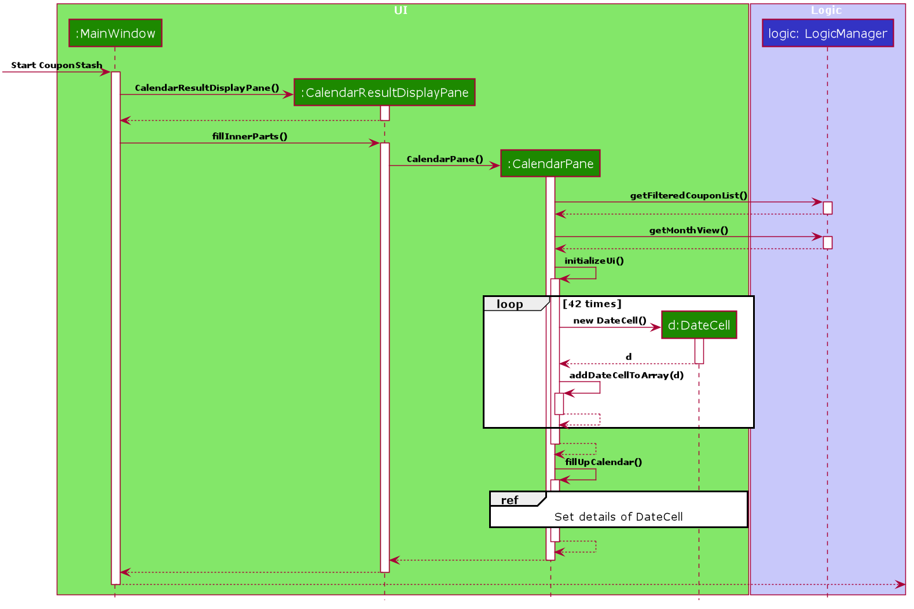

By: AY1920S2-CS2103-T09-4 Since: Feb 2020 Licence: MIT
1. Setting up
Refer to the guide here.
2. Design
2.1. Architecture

The Architecture Diagram given above explains the high-level design of the App. Given below is a quick overview of each component.
|
Tip
|
The .puml files used to create diagrams in this document can be found in the diagrams folder.
Refer to the Using PlantUML guide to learn how to create and edit diagrams.
|
-
At app launch: Initializes the components in the correct sequence, and connects them up with each other.
-
At shut down: Shuts down the components and invokes cleanup method where necessary.
Commons represents a collection of classes used by multiple other components.
The following class plays an important role at the architecture level:
-
LogsCenter: Used by many classes to write log messages to the App’s log file.
The rest of the App consists of four components.
Each of the four components
-
Defines its API in an
interfacewith the same name as the Component. -
Exposes its functionality using a
{Component Name}Managerclass.
For example, the Logic component (see the class diagram given below) defines it’s API in the Logic.java interface and exposes its functionality using the LogicManager.java class.

How the architecture components interact with each other
The Sequence Diagram below shows how the components interact with each other for the scenario where the user issues the command delete 1.

delete 1 commandThe sections below give more details of each component.
2.2. UI component

API : Ui.java
The UI consists of a MainWindow that is made up of parts e.g.CommandBox, ResultDisplay, PersonListPanel, StatusBarFooter etc. All these, including the MainWindow, inherit from the abstract UiPart class.
The UI component uses JavaFx UI framework. The layout of these UI parts are defined in matching .fxml files that are in the src/main/resources/view folder. For example, the layout of the MainWindow is specified in MainWindow.fxml
The UI component,
-
Executes user commands using the
Logiccomponent. -
Listens for changes to
Modeldata so that the UI can be updated with the modified data.
2.3. Logic component
API :
Logic.java
-
Logicuses theFitHelperParserclass to parse the user command. -
This results in a
Commandobject which is executed by theLogicManager. -
The command execution can affect the
Model(e.g. adding a person). -
The result of the command execution is encapsulated as a
CommandResultobject which is passed back to theUi. -
In addition, the
CommandResultobject can also instruct theUito perform certain actions, such as displaying help to the user.
Given below is the Sequence Diagram for interactions within the Logic component for the execute("delete 1") API call.
delete 1 Command|
Note
|
The lifeline for DeleteCommandParser should end at the destroy marker (X) but due to a limitation of PlantUML, the lifeline reaches the end of diagram.
|
2.4. Model component

API : Model.java
The Model,
-
stores a
UserPrefobject that represents the user’s preferences. -
stores the Address Book data.
-
exposes an unmodifiable
ObservableList<Person>that can be 'observed' e.g. the UI can be bound to this list so that the UI automatically updates when the data in the list change. -
does not depend on any of the other three components.
|
Note
|
As a more OOP model, we can store a Tag list in Address Book, which Person can reference. This would allow Address Book to only require one Tag object per unique Tag, instead of each Person needing their own Tag object. An example of how such a model may look like is given below.
|
2.5. Storage component
API : Storage.java
The Storage component,
-
can save
UserPrefobjects in json format and read it back. -
can save the Address Book data in json format and read it back.
2.6. Common classes
Classes used by multiple components are in the fithelper.commons package.
3. Implementation
This section describes some noteworthy details on how certain features are implemented.
3.1. Today Feature
3.1.1. Implementation
FitHelper’s entries have a Time attribute including a Date and a specific Time in the format of yyyy-mm-dd HH:mm.
This feature allows the user to view entries with the Date of today, i.e. shows only entries in today.
It fetches the filteredFoodEntryList and FilteredSportsEntryList stored in FitHelper storage.
The today mechanism is facilitated by
FilteredList
which wraps a ObservableList and
filters using the provided Predicate.
A FilteredList<Entry> filteredEntries is stored in the ModelManager.
In FitHelper, there is an
ObservableList<Entry> entries which contains all entries, regardless of its Type and Date. filteredEntries
in the ModelManager is initialized with this ObservableList.
Since a FilteredList needs a Predicate, which matches the elements in the source list that should be visible, the filter mechanism implements the following operation to support filtering:
-
Model#updateFilteredEntryList(Predicate<Entry> predicate)— Sets the value of the property Predicate in thefilteredEntries.-
Predicates are declared statically in the
Modelinterface, namelyPREDICATE_SHOW_ALL_ENTRIES,PREDICATE_SHOW_UNDONE_ENTRIES, andPREDICATE_SHOW_TODAY_ENTRIES. In particularPREDICATE_SHOW_TODAY_ENTRIESis as follows
-
Predicate<Entry> PREDICATE_SHOW_TODAY_ENTRIES = entry ->
entry.getTime().getDateStr().equals(new Today().getTodayDateStr());-
The
TodayCommandwill call this method to change the visibility of entries with different status by passing in the corresponding predicate.
An example usage scenario and how the today mechanism behaves at each step is shown below.
Step 1. The user launches the application for the first time.
UniqueEntryList will be initialized with a list of default entries in FitHelper.
This list contains a few entries with various dates.
Step 2. The user inputs today to list all today entries. UI passes the input to Logic.
Logic then uses a few Parser classes to extract layers of information out as seen from steps 3 to 5.
Step 3. Logic passes the user input to FitHelperParser. FitHelperParser identifies that this is a TodayCommand
through the word "today".
It then creates a
TodayCommandParser to parse the it into a TodayCommand and return.
Step 4. Logic finally gets the TodayCommand and execute it.
The execution firstly calls
Model#updateFilteredEntryList(Predicate<Entry> predicate) to update the Predicate in
filteredEntries in Model.
This execution then returns a CommandResult to UI, containing the response to the user.
Step 5. UI displays the response in the CommandResult.
In addition, UI will change to display today entries after model updates filteredEntries, since UI is constantly listening for the change in Model.
The Sequence Diagram below shows how the components interact with each other for the above mentioned scenario.
3.2. Diary Feature
3.2.1. Implementation
FitHelper also allows the user to keep a diary with a Date in the format of yyyy-mm-dd and the content with no more than 200 characters.
The diaries are represented as model Diary with the attributes of DiaryId, DiaryDate, and Content.
This feature allows the user to view their diaries.
It fetches the filteredDiaryList stored in FitHelper storage.
The diary feature is facilitated by
FilteredList
which wraps a ObservableList and
filters using the provided Predicate.
A FilteredList<Diary> filteredDiaries is stored in the ModelManager.
In FitHelper, there is an
ObservableList<Diary> diaries which contains all diaries, regardless of its DiaryDate. filteredDiaries
in the ModelManager is initialized with this ObservableList.
Since a FilteredList needs a Predicate, which matches the elements in the source list that should be visible, the filter mechanism implements the following operation to support filtering:
-
Model#updateFilteredDiaryList(Predicate<Diary> predicate)— Sets the value of the property Predicate in thefilteredDiaries.-
The predicate is declared statically in the
Modelinterface, namelyPREDICATE_SHOW_ALL_DIARIES. In particularPREDICATE_SHOW_ALL_DIARIESis as follows
-
Predicate<Diary> PREDICATE_SHOW_ALL_DIARIES = unused -> true;-
The
DiaryCommandwill call this method to change the visibility of diaries with different status by passing in the corresponding predicate.
An example usage scenario and how the diary mechanism behaves at each step is shown below.
Step 1. The user launches the application for the first time.
UniqueDiaryList contains no default diaries before the user adds any.
Step 2. The user inputs diary to list all diaries. UI passes the input to Logic.
Logic then uses a few Parser classes to extract layers of information out as seen from steps 3 to 5.
Step 3. Logic passes the user input to FitHelperParser. FitHelperParser identifies that this is a DiaryCommand
through the word "diary".
It then creates a
DiaryCommandParser to parse the it into a DiaryCommand and return.
Step 4. Logic finally gets the DiaryCommand and execute it.
The execution firstly calls
Model#updateFilteredDiaryList(Predicate<Diary> predicate) to update the Predicate in
filteredDiaries in Model.
This execution then returns a CommandResult to UI, containing the response to the user.
Step 5. UI displays the response in the CommandResult.
In addition, UI will change to display diaries after model updates filteredDiaries, since UI is constantly listening for the change in Model.
The Sequence Diagram below shows how the components interact with each other for the above mentioned scenario.

3.3. Calendar
-
The user enters a view command in the
calendar d/tmr. -
LogicManagerparses the user input, constructs and executes theCalendarCommand. -
The
CalendarCommandreachessetCalendarDatein theModeland returns theCommandResultto theLogicManager. -
The
LogicManagerreturns theCommandResultto theUi. -
The
Uigets thedatefromLogicManagerand updates the Ui to display the module. The following sequence diagram shows how the update operation works to change calendar page in model: 
3.4. Logging
We are using java.util.logging package for logging. The LogsCenter class is used to manage the logging levels and logging destinations.
-
The logging level can be controlled using the
logLevelsetting in the configuration file (See Section 3.5, “Add Weight Records”) -
The
Loggerfor a class can be obtained usingLogsCenter.getLogger(Class)which will log messages according to the specified logging level -
Currently log messages are output through:
Consoleand to a.logfile.
Logging Levels
-
SEVERE: Critical problem detected which may possibly cause the termination of the application -
WARNING: Can continue, but with caution -
INFO: Information showing the noteworthy actions by the App -
FINE: Details that is not usually noteworthy but may be useful in debugging e.g. print the actual list instead of just its size
3.5. Add Weight Records
FitHelper allows the user to track with their weight change easily by allowing user to add their current weight and previous weight.
3.5.1. Sample
An example usage scenario and how the addWeight command behaves at each step is shown below.
Step 1.
-
The user launches the application for the first time.
-
UniqueWeightListin Model contains no default weights before the user adds any. -
weightrecords.jsonin local Storage contains no weight records as well.
Step 2.
-
The user inputs
addWeightcommand word, followed byv/WEIGHT_VALUEand an optionald/DATE. -
UIpasses the input toLogic. -
Logicthen uses a fewParserclasses to extract layers of information out as seen from steps 3 to 5.
Step 3.
-
Logicpasses the user input toFitHelperParser. -
FitHelperParseridentifies that this is aAddWeightCommandthrough the command word "addWeight". -
It then creates a
AddWeightCommandParserto parse the input into aAddWeightCommandand return back.
Step 4.
-
Logicgets theAddWeightCommandand execute it. -
The execution firstly check is the new weight date is after today’s date and if there is already a existing weight in the UniqueList.
-
Both of these two cases will throw corresponding
CommandException. -
Then the execution add the new
Weightinto model. -
Finally, it returns a
CommandResulttoUI, containing the response to the user and the displayPage, which equals toWEIGHTpage.
Step 5.
-
UIdisplays the response in theCommandResult. -
In addition, UI will change to display Weight Page after updating Profile Page and Weight Page.
3.5.2. Implementation
Storage
A weight is stored with three attributes in the weightrecords.json database:
-
date: the date of the weight record in format ofyyyy-MM-dd, if no date is provided by the user, the default value is the date of today -
weightValue: a double value with two decimal places. -
bmi: the BMI value is also a double value with two decimal places. It is auto-computed and stored, using the formula :BMI = Weight Value(kg) / Height(m)^2. The Height value gets from user profile inuserprofile.jsondatabase.
Model
-
A single weight is represented as model
Weightwith the attributes ofDate,WeightValue, andBmi. -
In
ModelManager, all weights are represented byWeightRecords weightRecords.-
The
WeightRecordsclass implementsReadOnlyWeightRecordsinterface, and therefore can return an unmodifiable version of a unique list of weights. -
The
WeightRecordswraps aUniqueWeightListwhich allows adding and iterating. Unique here refers to the constraint that no two weight with the same date can exist in the list/database.
-
-
In
ModelManager, aFilteredList<Weight> filteredWeightobject is used to store and update a filtered version of all weights.-
The FilteredList wraps a
ObservableListand filters using a providedPredicate.
-
UI
When user input addWeight command to UI, the input is passed to Logic part as a String.
After addWeight command is executed, a CommandResult with DisplayPage equals WEIGHT will be passed back to MainWindow in UI part. Then:
-
Firstly, it will call
updateProfilePage(), since if the newly added weight has the lasted date, Current Weight and Current BMI in uer profile will need to be updated. -
Secondly, it will call
updateWeightPage(), since if a new weight is added successfully, new points should be added on to Weight Line Chart and BMI Line Chart. The text content of top notification will also be updated if the gap between Current Weight and Target Weight is changed. -
Lastly, it will call
showWeightPage(). This allows the Main Window auto-switch to Weight Page after eachaddWeightcommand by user.
Logic
The Sequence Diagram below shows how the components interact with each other for the mentioned scenario in sample.
3.6. Check calorie intake/consumption of some common food/sports
3.6.1. Implementation
The check function is achieved by calling the FitHelper inside the ModelManager to search
through either FoodCalorieTable or SportsCalorieTable for CalorieEntry that contain the
keywords specified by the user.
Given below are example usage scenario:
Initialization: when the application is launched, ModelManager will initialize a FitHelper, which
will in turn initialize both FoodCalorieTable and SportsCalorieTable to contain pre-set data
which is a list of one type of CalorieEntry (either FoodCalorieEntry or SportsCalorieEntry).
Case 1: when the user enter the command check x/sports k/swim, the LogicManager will create
a CheckCommand, which askes ModelManager to let FitHelper to search through SportsCalorieTable
to add first 3 CalorieEntry whose name contains the keyword swim into a List, and return the
list to CheckCommand. Since the list contains at least one CalorieEntry (meaning there is
some matching entries), the CheckCommand returns a CommandResult whose feedbackToUser
contains a success message followed by the string representation of each matching entries.
Case 2: when the user enter the command check x/f k/swim, the LogicManager will create
a CheckCommand, which askes ModelManager to let ` FitHelper` to search through FoodCalorieTable
to add first 3 CalorieEntry`s whose name contains the keyword `swim into a List, and return
the list to CheckCommand. Since the list contains no CalorieEntry (meaning there is no
matching entries), the CheckCommand returns a CommandResult whose feedbackToUser contains
a failure message followed by the string representation of the keyword.

3.6.2. Design Considerations
Aspect: Data structure to store entries
-
Alternative 1 (current choice): Use an
ArrayListas an attribute in CalorieTable to store the entries.-
pros: easy to implement partial-key search (compare the keyword with the name of each entry in the list).
-
cons: O(n) complexity for finding matching entries, where n is the number of entries in the list.
-
-
Alternative 2: Use a
HashMapas an attribute in CalorieTable to store the entries. The key is the name of the entry and the value is the entry.-
pros: (theoretically) O(1) time complexity for finding an entry given a complete keyword, regardless of how many entries are in the HashMap.
-
cons: hard to implement partial-key search (i.e. the keyword is only part of the name of the entry). == Documentation
-
Refer to the guide here.
4. Testing
Refer to the guide here.
5. Dev Ops
Refer to the guide here.
Appendix A: Product Scope
Target user profile:
-
has a need to control weight, therefore need to record daily food intake and sports
-
prefer desktop apps over other types
-
can type fast
-
prefers typing over mouse input
-
is reasonably comfortable using CLI apps
Value proposition: achieve fitness control faster than a typical mouse/GUI driven app
Appendix B: User Stories
Priorities: High (must have) - * * *, Medium (nice to have) - * *, Low (unlikely to have) - *
| Priority | As a … | I want to … | So that I can… |
|---|---|---|---|
|
new user |
record my basic information such as name and gender |
have a more complete profile |
|
user who is concerned about body shape |
record and update my current height and weight |
have a clear view of my current body condition |
|
user who wants to lose weight |
set my target weight |
have a clear target to work towards |
|
user who wants to set diet plans |
add a food entry |
can plan my diet |
|
user who wants to control calorie intake |
view the calorie in each food entry |
can keep track of my calorie intake |
|
user who wants to set sports plans |
add a sport entry |
can plan for my sport exercises |
|
user who wants to increase calorie consumption |
view the calorie consumption for each sport entry |
can keep track of my calorie consumption |
|
user who wants to adjust my diet/sports plans |
edit a food/sports entry |
can have my plans and records updated |
|
user who wants to remove my diet/sports plans |
delete a food/sports entry |
|
|
user who wants to search for an entry |
search by keywords in the entry name |
can find related entries without having to scan through all the entries |
|
user who wants see today’s plans |
switch to Today Page and view the daily food/sports plans |
can have a general idea of the daily diet/sports arrangements |
|
user who needs some suggestions for my daily plan |
switch to Today Page and view FitHelper feedback |
I know whether my daily food/sports plan is suitable |
|
user who wants to know my daily performance |
switch to Today Page and view my performance report |
I know my food calorie intake distribution and my task completion |
|
user who types wrongly sometimes |
undo my previous command |
I do not need to delete explicitly using a long command |
|
user who types wrongly sometimes |
redo my previous undo command |
I can re-executed a undone command |
|
user who wants to keep a diary |
add a diary log for a specific day |
note down my schedules, feelings, goals and so on as a self-encouragement |
|
user who wants to append more content to a previous diary |
append new content to existing diaries |
enrich my previous diaries' content |
|
user who wants to replace the content of a previous diary with new content |
edit existing diaries |
modify the content to an updated version |
|
user who wants to remove some diary logs |
delete existing diaries |
keep abandon some diary logs that I do not want to keep |
|
user who wants to clear my diary |
clear all existing diaries |
I can re-start my diary from a white paper |
|
user who wants keep fit |
acknowledge my weight change trend according to time |
keep track of my weight change easily |
|
user who wants to lose weight |
compare between my current weight and target weight |
know the gap clearly |
|
user |
update my basic information such as address and name if necessary |
have an updated profile at any time |
|
user |
view pending tasks and status of daily calories goals in a calendar |
have cleaner display of data |
|
user who wants to have a clean user interface |
clear entries regularly |
do not need to see irrelevant information |
|
user |
leave the application when I need |
It does not occupy additional space in my computer |
|
user |
list all entries by certain criteria |
I can filter the tasks by what I am looking for |
|
user |
get reminders for tasks not done |
I can focused on these tasks and complete them |
|
user who do not know very well about dieting and exercising |
check calorie intake/consumption of common food and sports |
I can input calorie intake/consumption without having to search about these information online. |
|
first-time user |
view help page |
I can know the functions of the application quickly |
{More to be added}
Appendix C: Use Cases
(For all use cases below, the System is the FitHelper and the Actor is the user, unless specified otherwise)
Use case: UC01 - Add an Entry
MSS
-
User adds an entry specifying a meal or a sport with name, time, location, and calorie.
-
FitHelper stores the entry to the specific date file.
-
FitHelper display successful record and the entry status.
Use case ends.
Extensions
-
1a. User input incomplete values.
-
1a1. FitHelper shows an error message.
Use case ends.
-
-
1b. The input time has clashes with previous entries.
-
1b1. FitHelper shows an error message.
Use case ends.
-
Use case: UC02 - Edits an Entry
MSS
-
User edits an entry specifying a meal or a sport with name, time, location, and calorie.
-
FitHelper modifies the entry to the specific date file.
-
FitHelper display successful record and the entry status.
Use case ends.
Extensions
-
1a. User input repeated values that are already stored in the entry.
-
1a1. FitHelper ignores the edit command.
Use case ends.
-
Use case: UC03 - Deletes an Entry
MSS
-
User deletes an entry by using the`delete` command.
-
FitHelper deletes the corresponding entry in the list and in the file.
-
FitHelper display the entry status and the successfully-delete message.
Use case ends.
Extensions
-
1a. The
INDEXspecified by the user does not exist.-
1a1. FitHelper shows an error message.
Use case ends.
-
{More to be added}
Appendix D: Non Functional Requirements
-
Should work on any mainstream OS as long as it has Java
11or above installed. -
Should be able to hold up to 1000 entries without a noticeable sluggishness in performance for typical usage
-
Should be able to function normally without internet access.
-
A user with above average typing speed for regular English text (i.e. not code, not system admin commands) should be able to accomplish most of the tasks faster using commands than using the mouse.
-
A user can get response from the system within 5 seconds after command input.
-
A user can be familiar with the system commands and interface within half an hour usage.
{More to be added}
Appendix E: Glossary
| Prefix | Meaning | Used in the following Command(s) |
|---|---|---|
x/ |
Type of entry |
add, check, delete, edit, find |
i/ |
Index of entry |
edit, delete, edit |
n/ |
Name |
add, edit |
t/ |
Time in format of "date hour minute" |
add, edit |
l/ |
Location |
add, edit |
c/ |
Calorie |
add, edit |
s/ |
Status |
add, edit |
r/ |
Remark |
edit |
d/ |
Date in format of yyyy-MM-dd |
calendar, addWeight |
dr/ |
Duration in format of yyyy-MM-dd yyyy-MM-dd |
add, edit |
dc/ |
Dairy contents |
dairy |
k/ |
Keyword |
check, find |
attr/ |
Attribute in user profile |
update |
v/ |
Attribute Value in user profile |
update, addWeight |
| Command | Flag | Meaning |
|---|---|---|
Sort |
-a |
Sort in ascending order |
Sort |
-d |
Sort in descending order |
Sort |
-t |
Sort according to time |
Sort |
-c |
Sort according to calorie intake |
Update |
-f |
Force update even with existing value |
Appendix F: Product Survey
Product Name : FitHelper
Author: …
Pros:
-
…
-
…
Cons:
-
…
-
…
Appendix G: Instructions for Manual Testing
Given below are instructions to test the app manually.
|
Note
|
These instructions only provide a starting point for testers to work on; testers are expected to do more exploratory testing. |
G.1. Launch and Shutdown
-
Initial launch
-
Download the jar file and copy into an empty folder
-
Double-click the jar file
Expected: Shows the welcome page of FitHelper. On the left hand side, the user can see a list of page name. Users are able to click on the button or using corresponding command to direct to that page. -
The window size is fixed.
-
-
Shutdown
-
Users are able to shutdown the application using CLI with following commands:
-
exit -
quit -
bye
-
-
Users can also choose to shutdown the application by clicking on X button on the right top side if the window.
-
User data will be auto-saved if user choose to shutdown the application. Three local data file in json format can be find:
-
fithelper.json: containg data related to entries and diaries. -
userprofile.json: containing data related to user profile. -
weightrecords.json: containing data related to all weight records.
-
-
G.2. Adding A New Weight Record
-
Add first weight record while there is no previous weight record in the database.
-
Prerequisites: None. Users are able to use
addWeightcommand at any page. -
Test case:
addWeight v/50.0
Expected:-
A new
Weightis added intoweightrecordsdatabase, withWeightValueequals 50.0,Datewith default value(today’s date) andBMIcalculated byHeight. -
The window is automatically directed to weight page. A new point is shown on both Weight Line Graph and BMI Line Graph. The top notification is also updated.
-
In profile page, Current Weight and Current BMI change from "Not Available Now" to the newest value.
-
-
Test case:
addWeight v/49.0 d/2050-01-01
Expected: No new weight record is added since the date is after current date. An error message is shown in the command result box.
-
-
Add new weight record when there is already some previous weight records existing in the database.
-
Prerequisites: None. Users are able to use
addWeightcommand at any page. -
Test case:
addWeight v/48.0
Expected: No new weight record is added since there is existing weight record with the same date (by default is today’s date) in the data base. An error message is shown in the command result box. -
Test case :
addWeight v/47.0 d/2020-03-01
Expected:-
A new
Weightis added intoweightrecordsdatabase, withWeightValueequals 47.0,Datewith 2020-03-01 andBMIcalculated byHeight. -
The window is automatically directed to weight page. A new point is shown on both Weight Line Graph and BMI Line Graph, and form a new trend line with previous data points. The top notification is also updated.
-
In profile page, Current Weight and Current BMI remain the same, since the newly added weight record is not the most recent record in the database.
-
-
G.3. Saving data
-
Dealing with missing/corrupted data files
-
If the application is launched and shut down at least once, there will be three local database in json format.
-
Delete
fithelper.json, and launch FitHelper again. All user manipulation on entries and diaries will be cleared.Dashboard,Today,CalendarandDiaryPage will restart with sample data. -
Delete
userprofile.json, and launch FitHelper again. All user manipulation on user profile will be clear.Profilepage will restart with sample user data. -
Delete
weightrecords.json, and launch FitHelper again. All user manipulation on weight records will be clear.Profilepage will show Current Weight and Current BMI as "Not Available Now", andWeightPage will have no data point on the trend line graph.
-